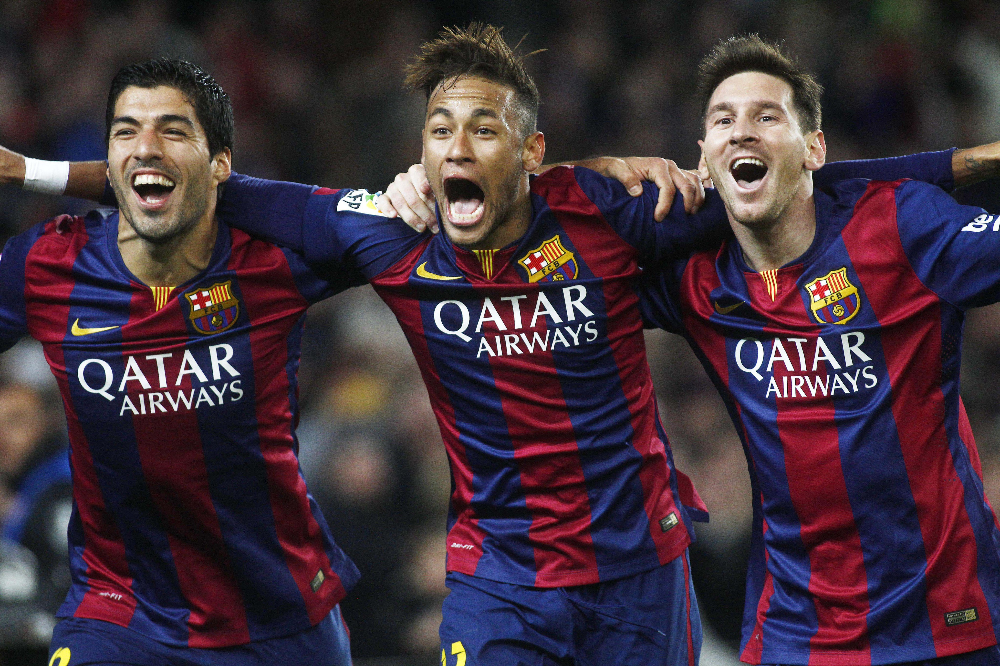
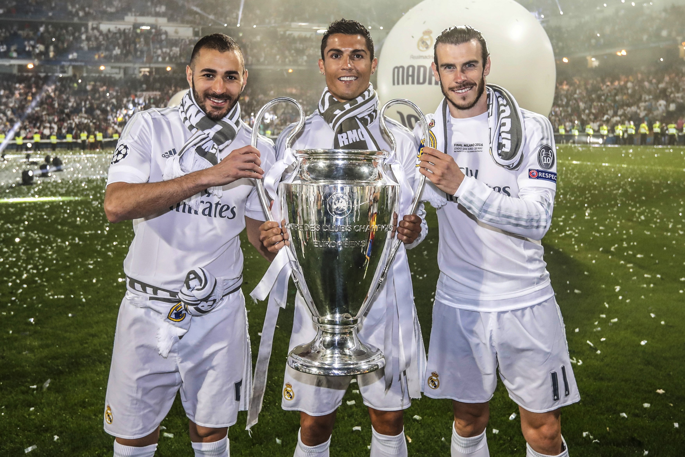

Voetbal
Ik ben begonnen met voetballen toen ik 4 was. Ik keek altijd met mijn opa naar voetbal op de televisie en
zo ben ik geinteresseerd geraakt. Sindsdien was ik altijd buiten aan het voetballen met vrienden tot we naar
huis moesten.
Ik ben opgegroeid met kijken naar spelers als Messi, Neymar en Ronaldinho, daardoor was ik ook een FC
Barcelona fan.
Voetbal is een heel mooi teamspel en wordt op z'n mooist uitgevoerd met goed teamspel, FC Barcelona was daar
1 van de beste in.
FC Barcelona heeft altijd een rivaal gehad genaamd Real Madrid CF ze waren ongeveer gelijk in kracht wat
zorgde voor hele spannende wedstrijden en bracht daarom ook veel toeschouwers met zich mee.
Deze wedstrijden heette El Clasico deze wedstrijden waren de grootste voetbal klassiekers van Spanje.
Maar voetbal bestaat uit niet alleen uit Spaanse wedstrijden er zijn namelijk 5 hele bekende
voetbalcompetities.
De Premier league voor Engels voetbal, de Bundesliga voor Duits voetbal, de Seria A voor Italiaans
voetbal en de Ligue 1 voor Frans voetbal. Op dit moment kijk ik het liefst naar de Premier league want
het zijn bijna altijd leuke wedstrijden met teams als Liverpool, Manchester City, Manchester United en
spelers als Salah, Sterling en De Bruyne.
Alhoewel mijn lievelings spelers in de Ligue 1 spelen voor Paris Saint-Germain. Paris Saint-Germain is al
heel lang de beste in de Ligue 1
Ze hebben een heel sterk elftal en winnen daardoor vaak de competitie waardoor veel wedstrijden heel
saai zijn om naar te kijken terwijl In de Serie A alle scores redelijk dicht op elkaar zitten. In de
Bundesliga staat Bayern München ruim eerste plaats.
In de Premier League zijn er 2 clubs die ruim boven de andere staan Manchester city en Liverpool.


Mijn favoriete voetballer
Neymar da Silva Santos Júnior – alias Neymar – is een Braziliaans voetballer die doorgaans als linksbuiten
speelt.
Hij verlengde in mei 2021 een contract tot medio 2025 bij Paris Saint-Germain, dat hem overnam van FC
Barcelona in 2017 voor €222.000.000,-.
Hij wordt beschouwd als een van de beste spelers van de 21e eeuw.
Santos
Neymar debuteerde in maart 2009 in de hoofdmacht van Santos, waar hij sinds 2003 de jeugdopleiding doorliep
en in augustus 2011 zijn verbintenis verlengde tot aan de zomer van 2014. In 2011 won hij de Bola de Ouro,
de prijs voor beste voetballer in de Braziliaanse Série A en de FIFA Puskás Award voor het scoren van het
mooiste doelpunt van het voorbije jaar. In 2011 en 2012 werd hij verkozen tot beste voetballer in
Zuid-Amerika, terwijl hij in 2010, 2011 en 2012 de prijs won van topschutter in de Braziliaanse competitie.
Barcelona
Op 3 juni 2013 werd Neymar officieel gepresenteerd bij FC Barcelona. Onder het toeziend oog van
tienduizenden toeschouwers maakte hij een ereronde door het Camp Nou, waarna hij medisch gekeurd werd en
officieel zijn handtekening zette onder een vijfjarig contract. Neymar zou de Catalaanse topclub in totaal
rond de 57 miljoen euro hebben gekost.[1][2] Hij debuteerde op de eerste speeldag van het seizoen 2013/14
tegen Levante UD. Hij viel na 64 minuten bij een 6–0 stand in voor Alexis Sánchez. Barça won in eigen
stadion met 7–0. Op 22 augustus 2013 maakte hij zijn eerste doelpunt voor Barcelona: met het hoofd in de
Spaanse Supercopa tegen Atlético Madrid. Hij speelde uiteindelijk in zijn eerste seizoen in de Spaanse
competitie 26 duels. In de UEFA Champions League stond hij tienmaal op het veld.[3]
Nadat Neymar in zijn eerste jaar bij FC Barcelona een aanvalstrio vormde met Lionel Messi en Alexis Sánchez,
ging hij dat vanaf het seizoen 2014/15 doen met Messi en Luis Suárez. Samen kregen zij in media de bijnaam
'MSN'. Neymar won gedurende het seizoen 2014/15 met FC Barcelona zowel het Spaanse landskampioenschap, de
Copa del Rey als de UEFA Champions League. MSN had hier een aandeel van 123 doelpunten in. Neymar maakte er
39, onder meer in de bekerfinale en in zowel de kwart- de halve- als de finale van de Champions League.
Daarop volgde een jaar later opnieuw winst van de Spaanse titel en nationale beker en ook die van het WK
voor clubs en de UEFA Super Cup 2015. MSN scoorde dit seizoen samen 131 keer. Neymar verlengde in juli 2016
zijn contract bij FC Barcelona tot medio 2021.[4]
Paris Saint-Germain
Neymar Jr
Neymar kwam na zijn contractverlenging nog één seizoen uit voor de Spaanse club. In zijn contract stond een
gelimiteerde afkoopsom die inhield dat hij voor €222.000.000,- mocht vertrekken. Een delegatie advocaten
bood dat bedrag op 3 augustus 2017 aan bij FC Barcelona. De voorzitter van de Primera División, Javier
Tebas, wilde deze transactie een dag eerder nog tegenhouden. Hij gaf als reden daarvoor dat hij betwijfelde
of Paris Saint-Germain - de beoogde nieuwe club van de Braziliaan - dit kon betalen zonder de Financial Fair
Play-regelgeving te overtreden. Daarom weigerde hij akkoord te gaan. Toen Barça-directeur Òscar Grau het
geld een dag later wel accepteerde, was Neymar officieel transfervrij. Enkele uren later tekende hij een
contract tot medio 2022 bij Paris Saint-Germain. Met een transferprijs van €222.000.000,- werd Neymar de
duurste voetballer ooit. Het bedrag was meer dan een verdubbeling van het vorige record, de €105.000.000,-
die Manchester United in 2016 betaalde aan Juventus voor Paul Pogba.
Neymar speelde op 13 augustus 2017 zijn eerste wedstrijd voor Paris Saint-Germain, en hij bekroonde zijn
debuut met zijn eerste doelpunt voor de club en een assist bij een 3-0 zege op EA Guingamp. Neymar scoorde
ook in zijn eerste Champions League-duel voor Paris Saint-Germain tegen Celtic, net als de andere twee uit
een nieuw aanvalstrio in Parijs, Kylian Mbappé en Edinson Cavani. Tijdens een 3-0 winst op Olympique
Marseille in februari 2018 brak Neymar zijn middenvoetsbeentje[5], waarna die wedstrijd zijn laatste van het
seizoen bleek te zijn. Zonder Neymar won Paris Saint-Germain de Ligue 1, de Coupe de France en de Coupe de
la Ligue. In het seizoen daarop won Paris Saint-Germain de Trophée des Champions. Op oktober 2018 scoorde
Neymar een hattrick tegen Rode Ster Belgrado in de Champions League. Opnieuw moest de Braziliaan een groot
deel van de tweede seizoenshelft missen door een blessure. Paris Saint-Germain won de Ligue 1 dat seizoen.
Neymar scoorde in de finale van de Coupe de France, en gaf ook een assist. Stade Rennais maakte echter een
comeback. Paris Saint-Germain verloor de strafschoppenserie, ondanks de benutte penalty van Neymar.
Ondanks onderhandelingen tussen Paris Saint-Germain en FC Barcelona om een terugkeer van Neymar naar
Barcelona,[6] speelde Neymar ook in het seizoen 2019/20 in het Parijs. Neymar scoorde in beide wedstrijden
van het tweeluik tussen PSG en Borussia Dortmund in de achtste finale van de Champions League, waardoor
Paris Saint-Germain zich voor het eerst in vier jaar plaatste voor de kwartfinale.